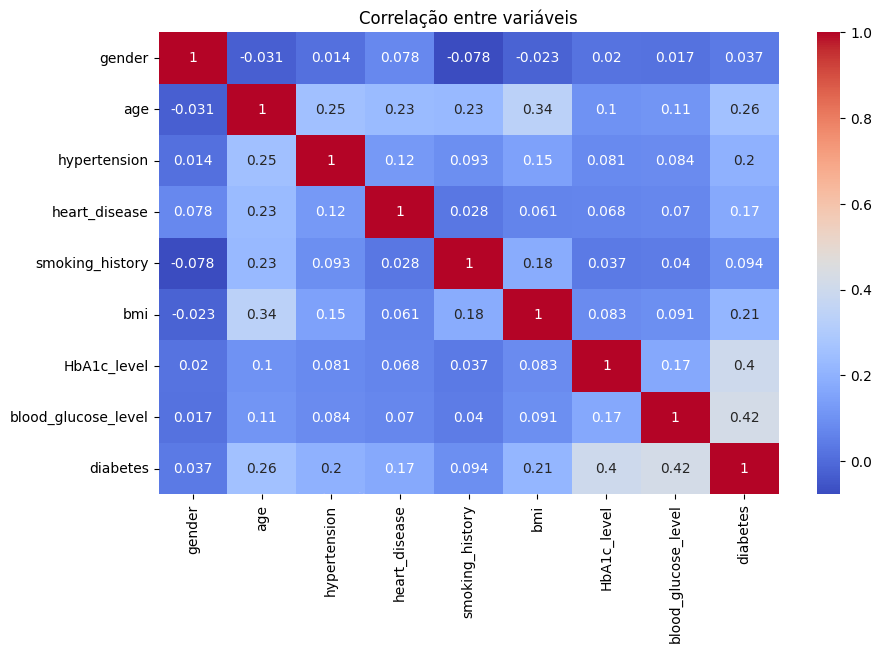
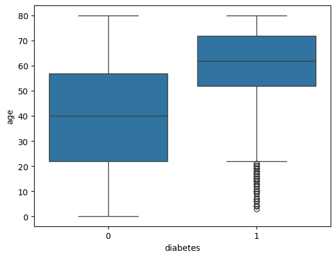
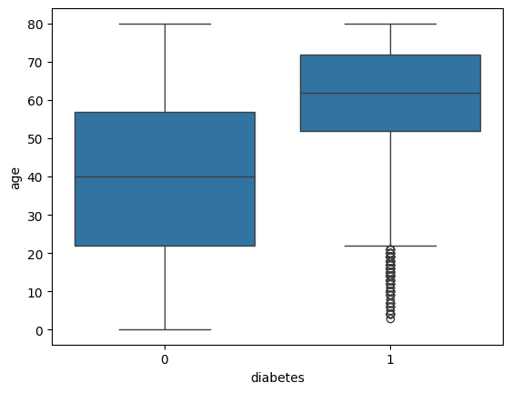
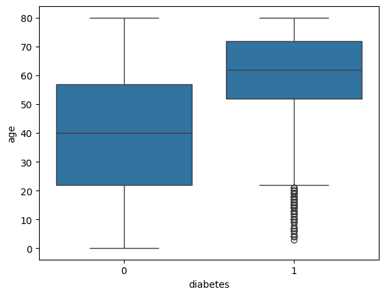

O que é EDA?
EDA, ou Análise Exploratória de Dados (Exploratory Data Analysis), é o primeiro passo essencial em qualquer projeto de dados. Ela nos ajuda a entender profundamente os dados antes de aplicar modelos ou tirar conclusões.
Durante a EDA, usamos estatísticas e visualizações para identificar padrões, detectar valores ausentes ou extremos, e entender como as variáveis se relacionam. Isso torna nossas análises mais confiáveis e bem fundamentadas.
“Conhecer seus dados é o primeiro passo para tomar boas decisões com eles.”


 


